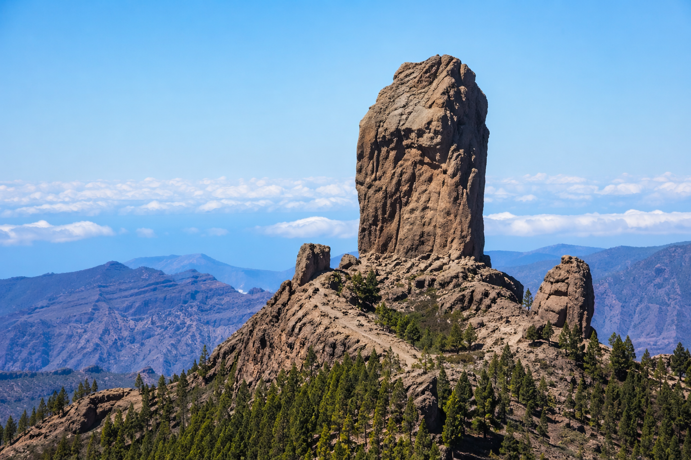
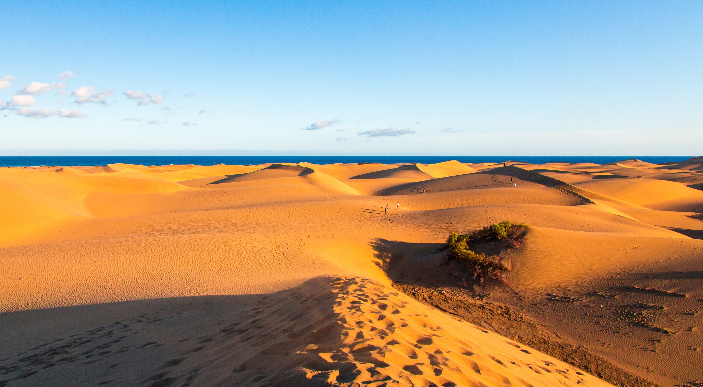
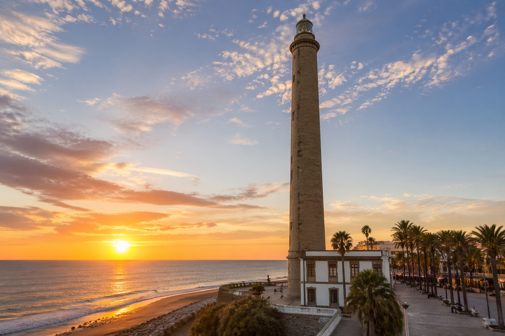
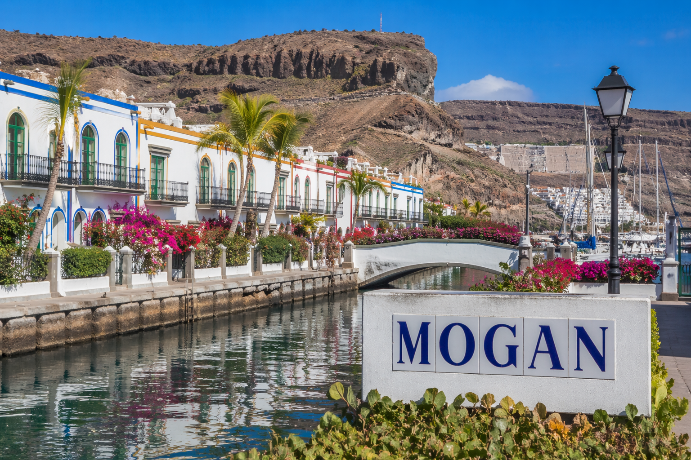
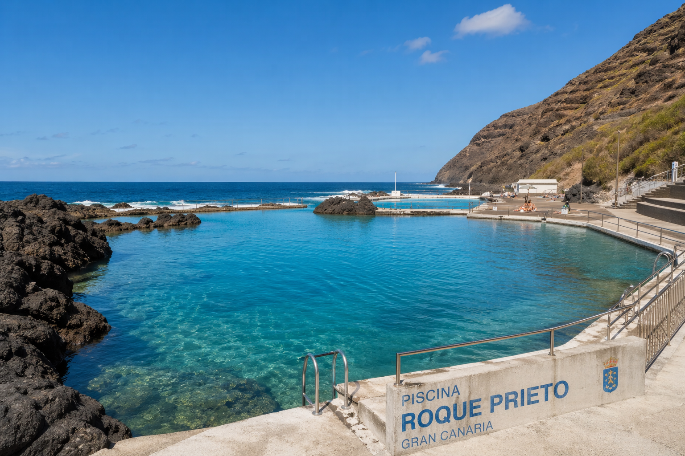

Emblematic Places
From stunning beaches to charming villages and breathaking landscapes, explore the most iconic places Gran Canaria has to offer.

Roque Nublo
The geographical landmark of Roque Nublo is the stand out symbol of these lands. It is a near ninety metre high monolith, and is a proud memento from a dim and distant past. It has inspired painters, writers and composers, and has appeared in a multitude of works. Many images spring to mind, such as Néstor Álamo’s “Lyrical lunar stone” or “Altar of my mystic land”.
Explore this destination
Maspalomas Dunes
The Maspalomas Dunes are a unique natural area in the Canary Islands, known for their beauty and the variety of ecosystems they contain. Protected by the Government of the Canary Islands as a special nature reserve, their 400 hectares include a beautiful beach, a field of living dunes made of organic sand, a palm grove, and a brackish lagoon.
Explore this destination
Faro de Maspalomas
Maspalomas Lighthouse forms part of the network of historic lighthouses in the Canary Islands. Located in the south of the island of Gran Canaria, at Punta de Maspalomas, its purpose is to light the way for shipping on the south coast of the island, from Punta de Arinaga, served by Arinaga Lighthouse in the northeast, to Punta de Castillete, served by the lighthouse in this part of Mogán.
Explore this destination
Puerto de Mogan
Puerto de Mogán is the most picturesque resort on the island of Gran Canaria, with two-storey apartment buildings built around a marina and fishing harbour. The roof terraces and gardens are bursting with bougainvillea, palm trees, bird-of-paradise flowers, hibiscus and other gloriously colourful plants.
Explore this destination
Roque Prieto Pools
You can truly disconnect from the world at the Roque Prieto natural swimming pools in north Gran Canaria. These two man-made pools close to Santa María de Guía are perfect for bathing in calm water on a coast known for its waves. The pools, never crowded and far from urban noise, have shallow areas and areas up to three metres deep.
Explore this destination